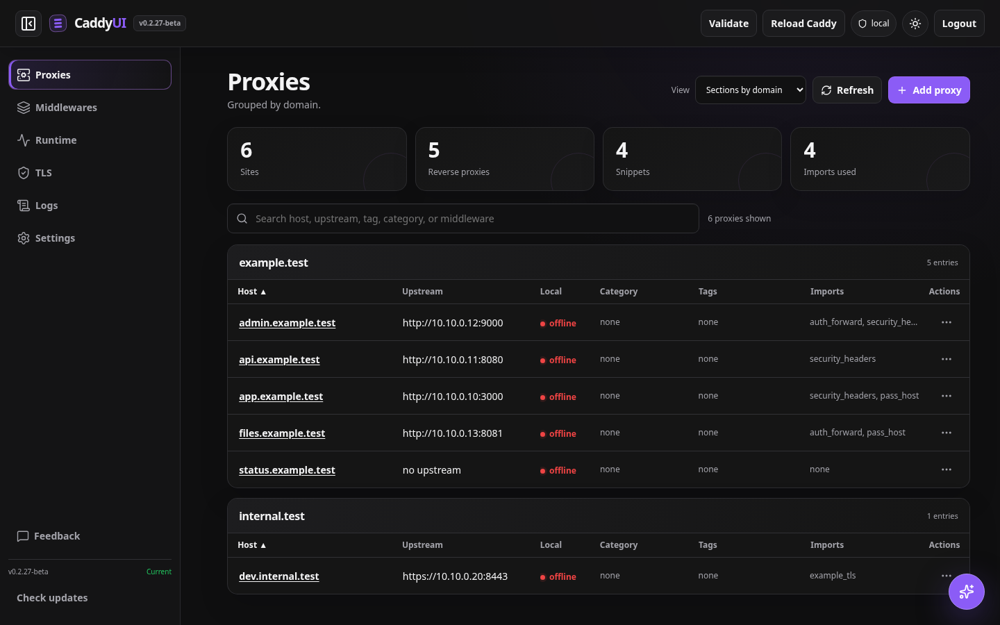
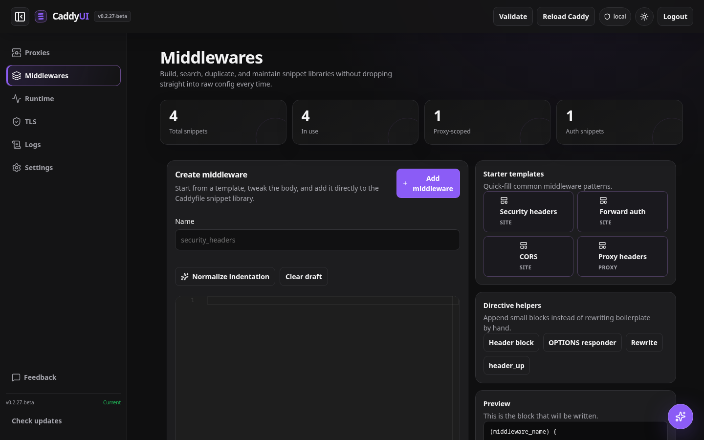
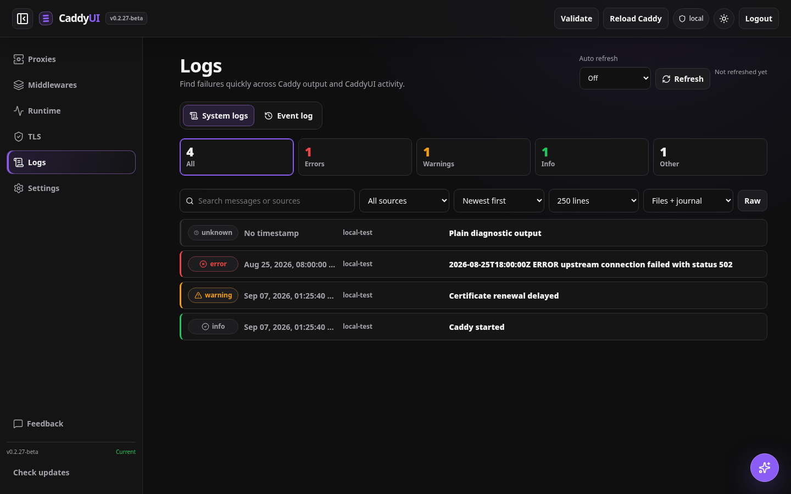

⌘
Reverse proxies
Create, group, search, enable, and edit routes. See upstream health beside the configuration it belongs to.
Self-hosted Caddy management
Manage reverse proxies, reusable middleware, TLS, logs, users, and the live Caddy runtime from one focused interface.
$ curl -fsSL https://raw.githubusercontent.com/PolderLabsVOF/CaddyUI/main/scripts/install.sh | bash
Grouped by domain.
Everything in one place
CaddyUI keeps common work approachable and leaves the complete runtime available when you need the detail.
Create, group, search, enable, and edit routes. See upstream health beside the configuration it belongs to.
Maintain shared snippets and route-level building blocks without copying directives between sites.
Inspect the active Caddy JSON, runtime IDs, PKI, and reverse-proxy upstreams through the Admin API.
Review handshakes, expiry, issuer, SANs, fingerprints, and global ACME defaults in one view.
Read discovered Caddy logs and journal output without switching tools or losing operational context.
Give local users view, edit, or admin access. Sensitive API credentials remain on the server.
Validate before applying, reload deliberately, and receive clear feedback when Caddy rejects a change.
Stay on stable for production or explicitly select beta and nightly builds from the update controls.
The actual interface
These screens come directly from the current CaddyUI build using the included example configuration—no concept art or separate demo UI.



Caddy-native by design
CaddyUI validates and applies changes through Caddy’s own API. API-managed installations restart with --resume, so the active configuration survives service restarts.
The browser only learns whether an API token is configured. Production requires a strong CADDY_UI_SECRET.
Select a Caddyfile during onboarding as an editor source, then manage the running instance through the API.
Place CaddyUI behind the authentication layer, VPN, or network policy that already protects your infrastructure.
Install the stable release
The installer creates the service, configures API mode where supported, and prints a one-time onboarding URL. Run it again later to update.
Install the serviceResolve the latest stable release and build CaddyUI on the host.
Connect CaddyConfigure API mode and resume the active configuration after restarts.
Create your adminUse the one-time onboarding URL, then add users and roles.
{kind=link}
{kind=link}
{kind=link}